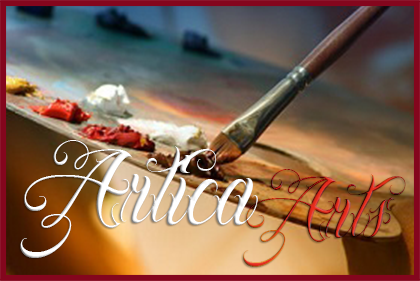

Artica Arts
is a studio that leverages all things art! Within our boutique
you can purchase art and art supplies of various types ...and
we also offer art lessons to both groups and individuals.
We love art, and we want to spread our love of it into the community.
We aim to be your 'one stop shop' for everything art!
We currently are in a growth phase
In addition to our most popular offerings (below),we are planning
to incorporate many other products and services. Below you can
find a listing of what we currently are involved with...
but be sure to check back often to see what else we are up to!
All our offerings are currently 20% off!
...be sure to ask at reception
Our Offerings
Art Classes - all ages and levels
Art Gallery - free admission
Art Sales and Leasing
Art Supplies - many in stock items...with ability to order specialized items (no shipping fees).
Drop in or make a private appointment to view any time
Our Classes
We are thrilled to provide all levels of art lessons in a tranquil,
peaceful environment.
Whether you are new to art or an experienced artist,
our dedicated instructors can develop a practice
to meet your needs. Refine your skills with us !
Whether you are just getting started, or you want to push your
skills to the limit, we can create a customized learning plan for you
We represent many amazing local artists.
Within these relationships we can rent art, and we sell art.
[Back to Top]
Copyright © 2026 Artica Arts
Contact Artica